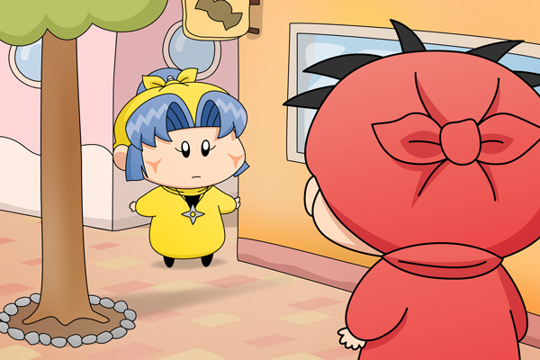

ヤシチ「ヤマネではないか！？
こんなところで何をしているのだ？」
ヤマネ「・・・」
ヤシチ「・・・？
拙者はこれからかりんとうを買いに行くところなのだが、
ヤマネも一緒に行くか？」
進行がものすごくスローペースでごめんなさい。とはいえヤマネちゃんストーリーもいよいよクライマックス(?)だったりします。いつもの緊張感の無いヤシチに対し、何やら思い詰めた表情をしているヤマネ。果たしてヤシチにどんな新たな危機が迫っているのでしょうか？次回をお楽しみに！(^^)
建物をバックにした背景は構図に苦労しますね。今回の背景も手抜きに見えて、いろんな部分で苦労しました（その割には雑ですが^^;）。普段お絵描きされる方も、人物のみ描くのではなく、建物などの風景も含めてみると練習になると思いますよ。
(2010/1/30)